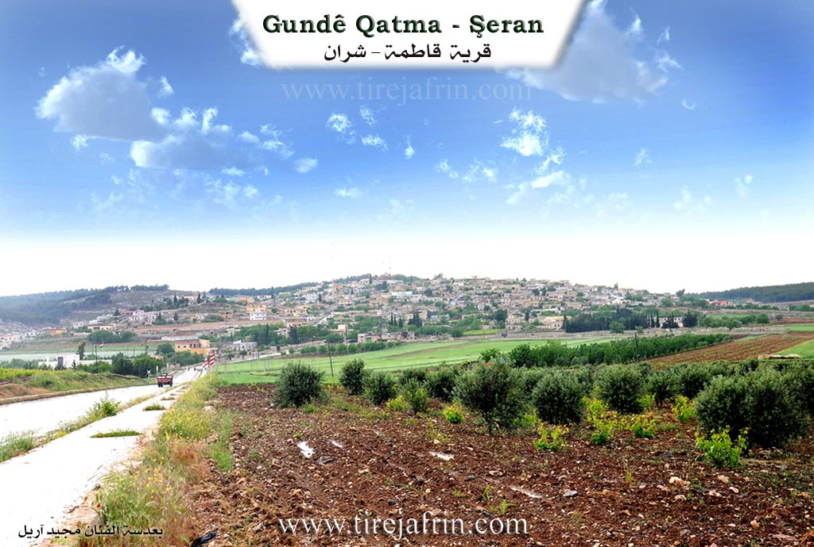
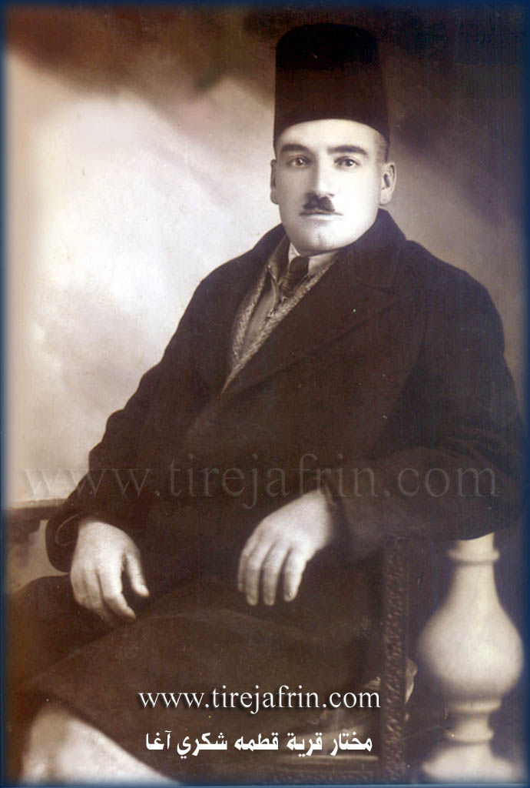
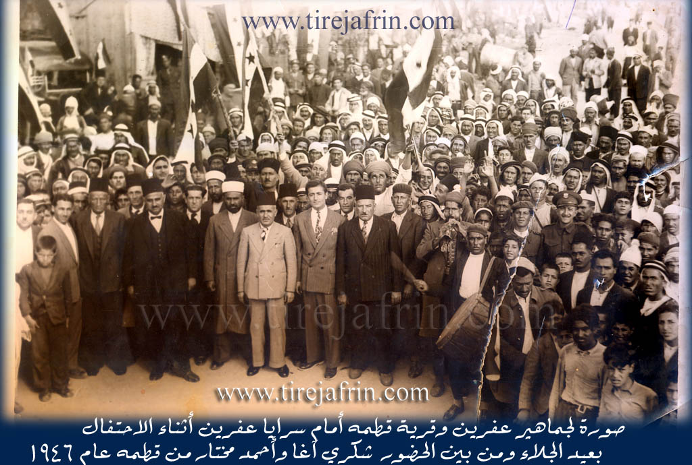
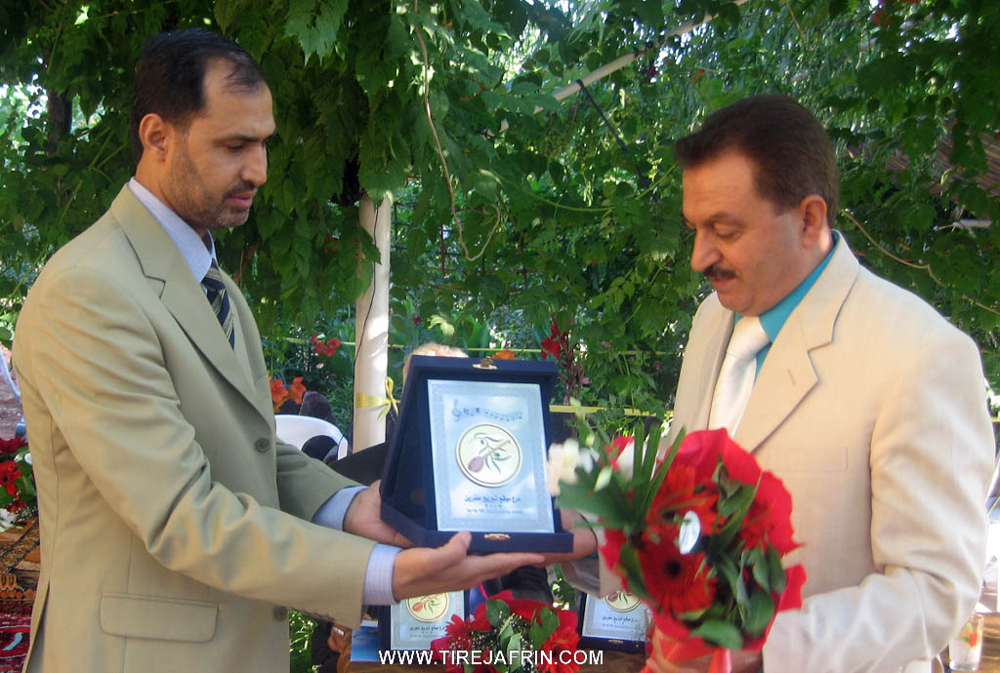
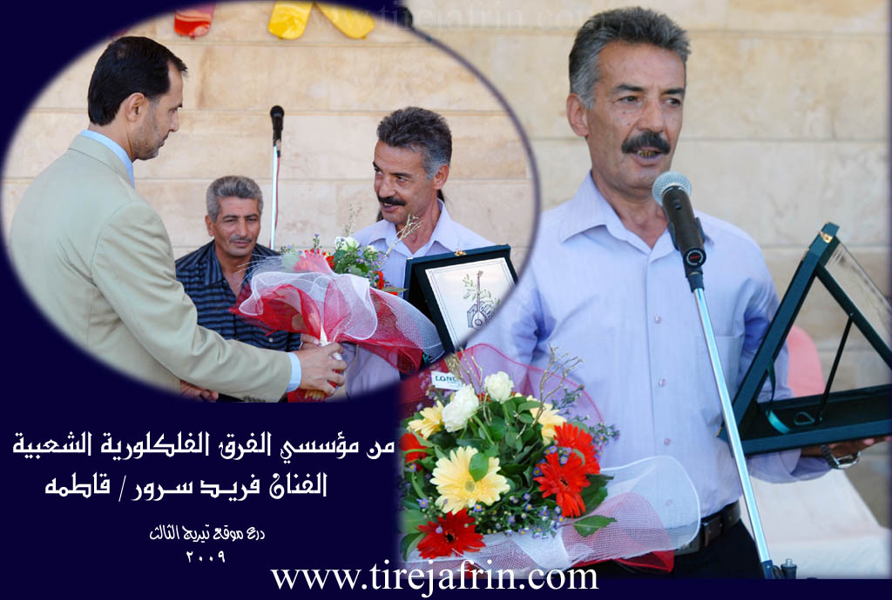
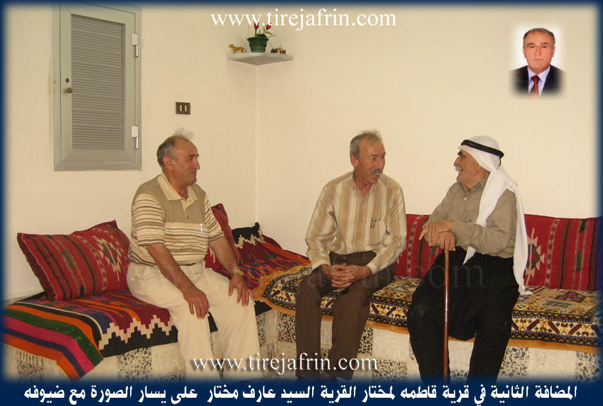
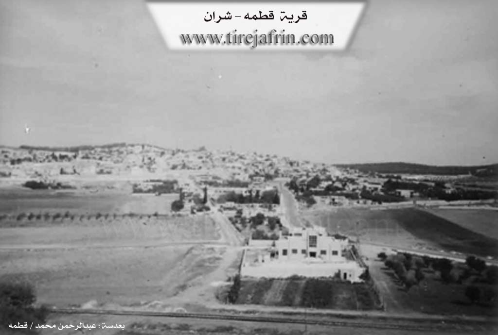

General Information
Nahiya (Subdistrict)
Şera
Also Known As
Qatma, Qitmê, قطمه
Families, Clans, etc.
Celal, Dada, Ebde Oske, Ehmed Hesen, Elî Sanme, Heso, Heşaş, Kûr Elî, Mala Ebû Xelîl, Me'cûno, Muxtar, Osko, Silo, Xelîl, Şêx

Photos









Basic Information about Qitmê
Source: Afrin 366
Etymology: Derived from the Turkish word Qatirma or Qatma according to an elder, though the host suggests it resembles a Turkish term for a sword
Foundation Date/Period: 650 to 700 years ago
Hills: Tilê Qitmê
Ruins: Meheta Qitmê
Trees: Gomalî, Portqal
Other Landmarks: Kefer Cenê, Meryemîn, Salit Mîdya, Mekteba îbtîdaî
Summaries
I. Summary from TirejAfrin Site (English) of Qitmê
Source: https://www.tirejafrin.com/site/kura%20afrin%20%20sheran%20-%20qitme.htm
It is stated in the book Çiyayê Kurmênc (Efrîn): A Geographical Study: Qetme, 5749 inhabitants, 988 hectares, 4km, 650m elevation.
Etymology and Location
Qetme: It is believed that the name is of Turkish origin, meaning "do not mix," and there is a popular narrative that discusses the connection of the name to the mother of Tîmûrleng, the famous Mongol commander.
It is a large, thriving village located on the southern slope of a limestone plateau. Beside it is the train station known by its name. There is a large archaeological hill (Tel) located 800 meters south of the village, containing foundations of buildings made of large hewn stones, and pottery shards are scattered on its surface. The northern and eastern heights overlooking it have been reforested. It contains a forestry department and a railway station. The village was an important headquarters for Ottoman forces and subsequently French forces. Among its people are the former People's Assembly member Ehmed Muxtar and the member of the Baath Party branch command in Heleb, Dr. Ruşdî Muxtar.
Geography and Boundaries
It is stated in the book Efrîn... Her River and Her Green Hills: Qetme is a village in Çiyayê Kurmênc, administratively belonging to the Şeran district, Efrîn region, Heleb governorate. It is a large village located in the eastern part of Çiyayê Kurmênc and the northern part of Çiyayê Sem'an on the southern slope of a limestone plateau. It is 4km away from the town of Şeran towards the south, and 1km away from the Xeta Trêna Heleb-Reco (Heleb-Reco railway) towards the north. Several watercourses descend from it towards the south, meeting a large watercourse that heads west towards the Efrîn river valley. Its soil is fertile clay.
The settlement of the area is very ancient, evidenced by the presence of a large archaeological hill in the south of the village at a distance of 800m, containing foundations of buildings made of large dressed stones. Pottery shards are also spread on its surface. It is bordered to the north by mountainous heights planted with forest trees, the village of Sînkerlî, and Xirabê Şeran. To the south, it is bordered by a slope and plain, the railway line, an archaeological hill, the Riya Efrîn-Heleb (Efrîn-Heleb road), modern villas on the main road, the village of Me'erestê Xetîb, and Malkiyê. To the west, it is bordered by the valley and heights of Hemûdê, the shrines of Sadiq and Menan, and the village of Kefer Cenê. To the east, it is bordered by the Se'd valley, a wide fertile agricultural plain planted with olive trees and vineyards, the city of Ezaz, Sîcraz, and Bafilûn.
Demographics and Infrastructure
The number of its houses is about 300, and its age is about 500 years according to the statements of one of the centenarians. Its old houses are made of stone and mud with flat wooden roofs, surrounded by modern cement construction. An electricity network is available, and drinking water comes from the Bîra Malkiyê (Malkiyê well) belonging to the state. There is also a drinking water well from the Roman era at the bottom of the village near the railway.
The village has a primary and middle school, a modern mosque in the center of the village, a post office, and a train station east of the village which is considered one of the most beautiful northern stations. There is a productive youth camp in the northern heights of the village. A water spring beside the Roman well flows into the valley of Kefer Cenê and Efrîn. There has been a municipality house there since 1983, in addition to 8 modern technical olive presses.
Agriculture and Economy
The residents of the village work in rain fed agriculture (grains, olives, vines, vegetables) on an area of 988 hectares. The heights overlooking it to the north, east, and west have been reforested with forest trees, and there is a forestry department. It is connected to the district center by a paved road, and there are two main paved streets in the village. Currently, buildings have spread around the main road, along with a number of luxurious modern villas. It houses the temporary headquarters of Mamûn University for Science and Technology (previously). This site was named the New Qetme Suburb, where the famous Marî restaurant, several cafeterias, and a technical services center belonging to the Directorate of Technical Services in Heleb are located. It is considered one of the beautiful villages in the Efrîn region.
Families and Notable People
Among its most important families are the Me'cûno family (the first to inhabit the village) and the Ehmed Hesen family. Its population reached 5750 according to the civil registry on December 31, 2005. In 1922, Qetme was the center for the Çiyayê Kurmênc region during the French Mandate before it was moved to Meydankê.
New Qetme Suburb
A new suburb in Çiyayê Kurmênc, belonging to the village of Qetme, Şeran district, Efrîn region, Heleb governorate. It is a small and modern suburb where the area between the junction of the Îstasyonê Qetme (Qetme station) and the junction of Kefer Cenê, spanning a length of 2km, has transformed into a residential area of excellent class. It extends next to the Riya Efrîn-Heleb (Efrîn-Heleb road) and includes dozens of luxurious and beautiful villas and a number of restaurants and cafeterias. Among the most important is the Marî restaurant and Qesr el-Jemîl, which became a center for Mamûn University for Science and Technology and the College of Administrative Sciences established in 2006, in addition to several shops and service workshops that serve passersby, summer vacationers, and residents living there.
Families in the Village
Kûr Elî family, Silo family, Dada family, Xelîl family, Heso family, Muxtar family, Heşaş family, Elî Sanme family, Ebde Oske family (Hacî Osman, the manager of the Tirej Efrîn site, is from this family), Osko family, Celal family, Şêx family.
Holders of Higher Degrees in the Village
Cemîl Hesen Baş Axa (PhD in Economics, Egypt), Ruşdî Muxtar (PhD in Mechanical Engineering, Britain), Sadiq Berîm (PhD in History, Russia), Izzet Oso son of Elî (PhD in Computer Engineering, Czechoslovakia), Welîd Dade (PhD in Civil Engineering, Russia), Raniye Oso (PhD in Food Industries, in progress, Germany), Luey Elî Xelîl (PhD in Arabic Literature, Damascus University), Zekeriya Hesanî (PhD in Agricultural Sciences, Vine specialization, France).
Village Mukhtar
Mr. Arif Muxtar.
Sources
Book: جبل الكرد (عفرين) دراسة جغرافية Çiyayê Kurmênc (Efrîn): A Geographical Study by د. محمد عبدو علي Dr. Mihemed Ebdo Elî.
Book: عفرين .... نهرها وروابيها الخضراء Efrîn... Her River and Her Green Hills by عبدالرحمن محمد Ebdulrehman Mihemed from the village of Qetme.
Studies of Navenda Tirej Soft / Ebdulrehman Hacî Osman.
Some residents of the villages.
Preparation and execution: Manager of the website Tirej Efrîn: Ebdulrehman Hacî Osman 20/12/2013
II. Summary of Qitmê from Afrin 366
Source: https://www.youtube.com/watch?v=oVCwqiuy6xM
The village of Qitmê, located in the Afrin region, is described as a large and established settlement with a history spanning approximately 650 to 700 years. It is situated directly opposite Kefer Cenê and near the road leading to Meryemîn. The village consists of roughly 350 to 375 households. Regarding the etymology of Qitmê, the host suggests a connection to a Turkish term for a sword, but a village elder clarifies that the name derives from the Turkish word Qatirma or Qatma.
The geography and infrastructure of Qitmê are defined by several specific landmarks. A prominent feature is the Tilê Qitmê (the hill of Qitmê). Historically significant is the Meheta Qitmê, the local railway station, which indicates the village's connection to older transport networks. Education is provided locally through a primary school, referred to as Mekteba îbtîdaî, with students attending up to the ninth grade. The village is also located near an area or road referred to as Salit Mîdya.
Socially, the documentary focuses on a visit to Mala Ebû Xelîl, where the host interacts with the family patriarch and an elderly woman. The residents maintain strong connections with the diaspora; greetings are sent to family members like Mirfet in Germany, as well as relatives in Heleb (Aleppo). The village is portrayed as prosperous, with the host noting that many residents have renovated their courtyards (hewş) extensively. The local economy and daily life are supported by a market that takes place twice a week.
Environmentally, Qitmê is described as rich in water resources. Residents note that digging wells just five to ten meters deep yields water, and the village is supplied with piped water as well. The agricultural output is diverse, with specific mentions of Portqal (orange) trees and a distinct fruit tree called Gomalî growing in the courtyards. The village is also surrounded by olive groves, typical of the region, and acts as a transit point toward the neighboring village of Qîbarê.
Transcriptions and Subtitles
| Source | Video | Subtitles | Transcript |
|---|---|---|---|
| Afrin 366 1 | Watch Video | Download SRT | View Transcript |
Foundation/Origin Information of Qitmê
The Ma'junoo family were the first to inhabit the village.
Source: TirejAfrin Site
Possible Village Name Meaning of Qitmê
Believed to be of Turkish origin meaning 'don't mix'. A folk tale connects the name to the birth of Tamerlane.
Source: TirejAfrin Site
The name comes from a Turkish word. One explanation is it derives from 'qatma qatma,' meaning 'don't interfere.' Another is it comes from 'qut meke' (do not sever/cut), because it was the site of a critical railway junction.
Source: Afrin 366 Transcript
V. Links
- Tirej Afrin:
https://www.tirejafrin.com/site/kura%20afrin%20%20sheran%20-%20qitme.htm - Local FB page:
https://www.facebook.com/profile.php?id=100079362714040 - Link:
https://www.facebook.com/Qitmetoday - Link:
https://www.facebook.com/GundiQetme/ - Video:
https://www.youtube.com/watch?v=jBFnRK8Et-k - Link:
https://www.youtube.com/watch?v=qy_bYd3Vmso - Link:
https://www.youtube.com/watch?v=yWd-jLTRDP8 - Link:
https://www.youtube.com/watch?v=hu5tO9sClbc - Afrin 366:
https://www.youtube.com/watch?v=oVCwqiuy6xM